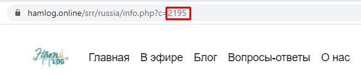
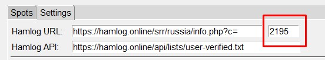
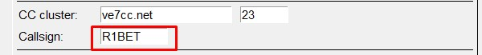
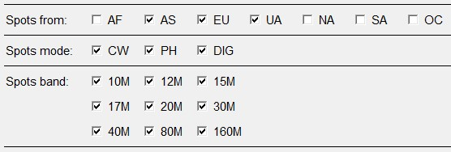
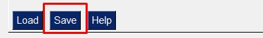
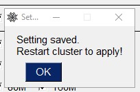

Общий принцип работы следующий. Сначал приложение в автоматическом режиме получает с сайта hamlog.online данные о закрытых слотах по дипломной программе "Россия и Россия на всех диапазонах". Затем с кластера VE7CC показываются только споты по незакрытым слотам, причем с учетом выбранных настроек по диапазонам и модуляциям.
1. Определяете ID в дипломной программе для вашего позывного. Для этого надо перейти на страницу с вашей статистикой на https://hamlog.online/srr/russia/
После чего последние цифры в адресе вашей личной страницы со статистикой и будет искомым ID.
Полученный ID вносите в следующее поле на вкладке 'Settings':
2. В поле 'Callsign' вносите ваш позывной, который будет использоваться в качестве логина в телнет кластере.
Поддерживаются любые телнет кластера работающие на программном обесепечении СС. DXSpider кластера не поддерживаются!
3. Далее выбираете споты отправленные с каких именно 'континентов/территорий' будут отображаться. Например, для европейской части России в приниципе достаточно EU (Европа) и UA (полностью вся Россия), на всякий случай можно также включить AS (Азия). Логика работы опций 'Spots mode' и 'Spots band' точно такая же - в программе будут отбражаться только споты для Российских станций выбранных диапазонов и модуляций. Например, если вы не знаете телеграф, то выключаете CW, Потеряли микрофон - отключаете PH и т.д, нет анетнн на 160М - то отключаете 160М и т.д.
4. Для сохранения/применения настроек надо нажать на кнопку 'Save'.
После удачного сохранения/применения настройек появится всплывающее окно.
Настройки хранятся в файле settings.ini, который находится в тоже же самой папке, что и приложение. При каждом запуске настройки из этого файла загружаются и применяются автоматически. Также их можно загрузить принудителньо нажав кнопку 'Load'.
Затем переключаетесь на вкладку 'Spots' и нажимаете кнопку 'Start' внизу окна. Обновятся все необходимые базы, будет инициировано соедение к телнет кластеру с последующим входом в него и применение фильтров на основании ваших настроек.
Основное окно разделено на две части: в верхней в виде таблицы отображаются нужные споты, а в нижнюю выводится различная информация по текущему статусу работы, а также отладочная (если выбрана настройка Debug на вкладке 'Settings'). В строке current status: отобржается текущий статус соедения с телнет кластером (online/offline).
В нижней части окна также расположены следующие кнопки:
Start - обновить необходимые для работы базы данных (если они устарели) и инициировать соединение с телнет кластером.
Stop - разорвать соединение с телнет кластером.
Update - принудительно обновить необходимые для работы базы данных.
Clear - очистить таблицу спотов.
Exit - выйти из программы.
В процессе работы программа создает/использует следующие файлы (базы данных):
hamlog.db - данные по закрытым/незакрытым слотам из персональной страницы на Hamlog. В автоматическом режиме обновляются с сайта hamlog.online при старте программы один раз в сутки.
hlusers.txt - российские пользователи Hamlog. Используются для отображения '+' в колонке 'H' в таблице спотом. Очевидно, что если оператор является пользователем Hamlog, то вероятность, что он зальет логи и вы закроете спот - выше. В автоматическом режиме обновляются с сайта hamlog.online при старте программы один раз в сутки.
cty.db - база данных с соответствием префиксов позывных конкретным территорями по DXCC. Используется для опеределения континента отправившего спот, чтобы отфильтровать дальние/лишние споты. Для обновления скачиваете архим с https://www.country-files.com/ и распаковываете файл cty.csv в папку c ralc.exe. После старта программы (или принудителнього обновления кнопкой Update) база данных cty.db обновляется, а файл cty.csv автоматически удаляется.
Для специальных позывных регион определяется через запрос к сайту https://grfc.ru/. Причем ответ кешируется до завершения приложения.
Для дрообных позывных определить регион невозможно. Поэтому споты подобных позывных всегда показываются в таблице. Как правило их сравнительно немного, поэтому особых проблем они не создают.
Приложение написано на python. Исходники доступны на https://github.com/yarodin/RALC
Вопросы, предложения, сообщения об ошибках: https://r1bet.ru/about/